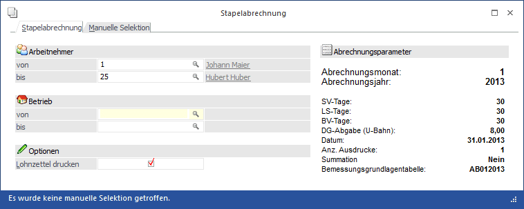
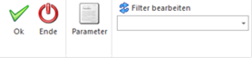
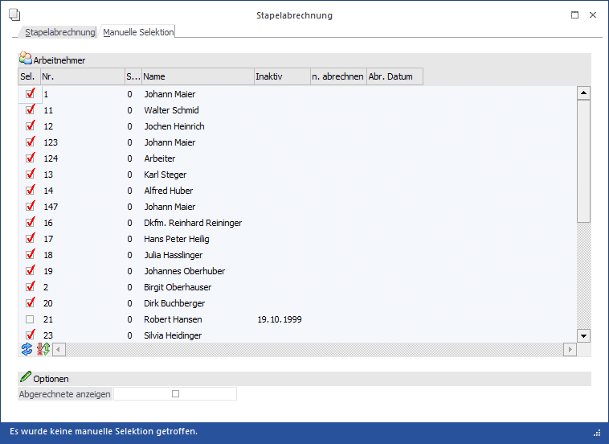
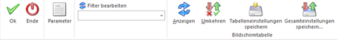

Bei der Stapelabrechnung werden die erfassten Be- und Abzüge im Zuge einer Stapelverarbeitung abgerechnet. Zusätzlich gibt es die Möglichkeit, eine manuelle Selektion vorzunehmen, d.h. man kann bestimmte AN auswählen, die im Stapelverfahren abgerechnet werden sollen.
Die Erfassung von Bezügen kann aber auch direkt über die Stapelabrechnung erfolgen - das kann aber nur dann funktionieren, wenn alle Bezüge, die dem AN zustehen, als automatische Lohnarten im AN-Stamm hinterlegt wurden.
Die Stapelabrechnung erfolgt im Programmpunkt
1 Abrechnen
1 Stapelabrechnung
oder Schnellaufruf
1 STRG + S
wobei hier zwei Register zur Verfügung stehen:
Stapelabrechnung:
In der Stapelabrechnung werden alle AN gemäß den vorgenommenen Einstellungen abgerechnet.

Anzeige der Abrechnungsparameter
Die für die Abrechnungsperiode gesetzten und für alle Arbeitnehmer gültigen Parameter werden angezeigt:
Ø Monat / Jahr
Anzeige des aktuellen Abrechnungsmonats und -jahres.
Ø SV-Tage
Die Anzahl der sozialversicherungspflichtigen Tage wird angezeigt.
Ø LS-Tage
Die Anzahl der lohnsteuerpflichtigen Tage wird angezeigt.
Ø BV-Tage
Die Anzahl der Tage für die Berechnung der BV wird angezeigt.
Ø U-Bahn
Für alle Arbeitnehmer, bei denen im Arbeitnehmerstamm die Checkbox "U-Bahn" aktiv gesetzt wurde, wird der angezeigte Betrag berechnet.
Ø Datum
Hier wird das allgemeine Abrechnungsdatum angezeigt, das auch in den Abrechnungsparametern definiert wurde. Wenn noch kein Datum in den Abrechnungsparametern eingetragen wurde, dann wird das aktuelle Systemdatum verwendet.
Ø Anz. Ausdrucke
Die Anzahl der Nettolohnabrechnungen pro Arbeitnehmer wird angezeigt.
Ø Summation
Es wird angezeigt, ob Lohnarten summiert werden oder nicht.
Ø Bemessungsgrundlagentabelle
Hier wird die Tabelle angezeigt, die zur Abrechnung verwendet wird.
Änderung der Parameter
Durch Anklicken des Buttons PARAMETER können diese verändert werden.
ACHTUNG:
Diese Parameter haben für alle Arbeitnehmer Gültigkeit. Arbeitnehmerspezifische Parameter müssen im Programmpunkt
1 Abrechnen
1 Einzelabrechnung
1 Parameter
geändert werden.
Festlegung des Umfanges
Ø Arbeitnehmer von - bis
Einschränkung der Arbeitnehmer, für die die Stapelabrechnung durchgeführt werden soll. Wie die AN-Nummer eingegeben werden kann, dazu gibt es mehrere Möglichkeiten. Details dazu entnehmen Sie bitte dem Kapitel Aufruf einer AN-Nummer. Wird in den Feldern von - bis ein AN eingetragen, so wird daneben der Name des AN angezeigt, wobei der Name unterstrichen dargestellt wird. Durch einen Klick auf den AN wird standardmäßig der AN-Stamm aufgerufen. Über die rechte Maustaste kann aber individuell eingestellt werden, welche Aktion ausgelöst werden soll. Dabei stehen folgende Optionen zur Verfügung:

ü Arbeitnehmerstamm
Es wird der
AN-Stamm aufgerufen, wobei gleich der Datensatz des angezeigten AN angezeigt
wird.
ü Arbeitnehmerinfo
Es wird die
Arbeitnehmerinfo im Programm WinLine INFO geöffnet.
ü Jahreslohnkonto
Es wird das
Steuerfenster für das Jahreslohnkonto aufgerufen, wo der ausgewählte AN gleich
vorgeschlagen wird. Die Ausgabe muss nur mehr durchgeführt werden.
ü Arbeitnehmer Stammblatt
Es wird
das Steuerfenster für das Arbeitnehmer Stammblatt aufgerufen, wo der ausgewählte
AN gleich vorgeschlagen wird. Die Ausgabe muss nur mehr durchgeführt werden.
ü Lohnerfassung A
Es wird die
Einzelabrechnung aufgerufen, wobei gleich alle Daten des ausgewählten AN
abgerufen werden. Bei diesen Punkt ist darauf zu achten, dass ggf. die
automatischen Lohnarten abgearbeitet werden.
Die zuletzt getätigte Einstellung wird als Standard übernommen, d.h. wenn das nächste Mal nur auf den AN-Namen geklickt wird, dann wird die letzte Aktion automatisch durchgeführt. Diese Einstellung wird pro Benutzer gespeichert.
Ø Betrieb von - bis
Einschränkung der Betriebe, die automatisch abgerechnet werden sollen. Durch Drücken der F9-Taste kann nach allen angelegten Betrieben gesucht werden.
Ø Lohnzettel drucken
Ist diese Checkbox aktiv, dann wird für jeden Abrechnung auch ein (bzw. lt. Einstellungen der Parameter) Abrechnungsbeleg gedruckt. Bleibt die Checkbox inaktiv, können die Abrechnungsbelege zu einem späteren Zeitpunkt über den Stapeldruck gedruckt werden.
Buttons

Ø Ok
Durch Drücken der F5-Taste wird die Stapelabrechnung gestartet. Während der Stapelabrechnung wird ein Protokoll gedruckt, aus dem ersichtlich ist, welche AN abgerechnet wurden und für welche AN keine Abrechnung durchgeführt wurde.
Gründe dafür, warum ein AN bei der Stapelabrechnung nicht berücksichtigt wird:
ü AN ist auf Inaktiv gesetzt
ü AN ist auf "nicht abrechnen" gesetzt
ü AN hat ein Eintrittsdatum, das nach der aktuellen Abrechnungsperiode liegt
ü AN ist als "Geringfügig" gekennzeichnet, hat aber einen Bezug, der darüber hinaus geht.
ü Für den AN wird ein Zukunftssicherungsbeitrag (§ 3 Abs. 1) abgerechnet, der den Betrag von € 300,- übersteigt.
ü AN hat keine Erfassungszeilen, obwohl bereits das Kennzeichen für die automatischen Lohnarten gesetzt ist.
Für alle diese Gründe wird eine entsprechende Meldung am Stapelabrechnungsprotokoll geschrieben und die Abrechnung wird auch nicht durchgeführt.
Ø Ende
Durch Drücken der ESC-Taste wird das Fenster geschlossen.
Ø Parameter
Durch Anklicken des Buttons PARAMETER können diese verändert werden.
Ø Filter
Zusätzlich zu den im Fenster angebotenen Einschränkungsvarianten gibt es die Möglichkeit, jede beliebige Einschränkung bzw. Sortierung über den Filter vorzunehmen. Dabei kann auch die Reihenfolge, in der die Abrechnung durchgeführt werden soll, eingestellt werden. Nähere Informationen dazu finden Sie im Kapitel Filter - Assistent.
Manuelle Selektion
Im Register Manuelle Selektion können alle AN, die lt. den Einstellungen des Registers Stapelabrechnung zur Abrechnung anstehen, in einer Tabelle angezeigt werden. Hier können dann zusätzliche Selektionen vorgenommen werden.

In der Tabelle werden folgende Informationen angezeigt:
Ø Sel.
Die AN, die noch nicht abgerechnet wurden, und bei denen weder das Kennzeichen Inaktiv noch das Kennzeichen "nicht abrechnen" gesetzt ist, werden automatisch zur Abrechnung selektiert. Durch Deselektieren der Checkbox kann der AN von der Abrechnung ausgenommen werden.
Ø Nr. /Sub
Hier wird die AN-Nummer und - sofern vorhanden - die SUB-AN-Nummer angezeigt.
Ø Name
Hier wird der Name des AN angezeigt.
Ø Inaktiv
In diesem Feld wird das Datum angezeigt, an dem der AN auf Inaktiv gesetzt wurde. AN, bei denen ein Inaktivdatum hinterlegt ist, werden in der automatischen Selektion nicht berücksichtigt (die Checkbox "Sel." ist standardmäßig deaktiviert). Durch Aktivieren der Checkbox "Sel." wird der AN aber trotzdem in der Stapelabrechnung berücksichtigt.
Ø n. abrechnen
In diesem Feld wird das Datum angezeigt, an dem der AN auf "nicht abrechnen" gesetzt wurde. AN, bei denen ein "nicht abrechen"-Datum hinterlegt ist, werden in der automatischen Selektion nicht berücksichtigt (die Checkbox "Sel." ist standardmäßig deaktiviert). Durch Aktivieren der Checkbox "Sel." wird der AN aber trotzdem in der Stapelabrechnung berücksichtigt.
Ø Abr. Datum
Durch Aktivieren der Checkbox
Ø Abgerechnete anzeigen
werden auch die AN angezeigt, die bereits abgerechnet wurden. Diese AN können durch Aktivieren der Checkbox Sel. nochmals abgerechnet werden.
Buttons

Ø Ok
Durch Anklicken des OK-Buttons wird die Stapelabrechnung gemäß den vorgenommenen Einstellungen durchgeführt. Dazu wird auch ein Protokoll ausgegeben, aus dem ersichtlich ist, welche AN abgerechnet wurden bzw. warum AN nicht abgerechnet wurden.
Ø Ende
Durch Drücken der ESC-Taste wird das Fenster geschlossen, es werden keine Abrechnungen durchgeführt.
Ø Parameter
Durch Anklicken des Parameter-Buttons können die eingestellten Abrechnungsparameter nochmals verändert werden. Achtung: eine Änderung hat nur dann Auswirkungen, wenn noch keine Abrechnungszeilen erfasst wurden.
Ø Filter
Wird der Filter-Button angeklickt, kann ein neuer Filter definiert oder ein bestehender Filter gewählt werden. Dort kann eingestellt werden, nach welchen frei definierbaren Kriterien die Selektion und/oder Sortierung durchgeführt werden soll (Details entnehmen Sie dem Kapitel Filter - Assistent.)
Wurden in diesem Fenster bereits Filter angelegt, kann aus der Auswahllistbox ein bestehender Filter gewählt werden. Es werden immer nur die Filter angezeigt, die für das gerade aktive Fenster angelegt wurden.
Ø Anzeigen
Durch Anklicken des Anzeigen-Buttons wird die Tabelle gemäß den vorgenommenen Einstellungen gefüllt.
Ø Umkehren
Durch Anklicken des Umkehren-Buttons werden die Einstellungen in der Tabelle in das Gegenteil gekehrt - alle selektierten AN werden deselektiert und alle deselektierten AN werden selektiert.
Ø Tabelleneinstellungen speichern
Die Spalten einer Tabelle können grundsätzlich an beliebige Positionen verschoben, bzw. in der Breite entsprechend angepasst werden. Durch Anwahl des Buttons "Tabelleneinstellungen speichern" werden die Einstellungen benutzerspezifisch gespeichert und bei dem nächsten Aufruf des Programmpunktes wieder vorgeschlagen.
Ø Gesamteinstellungen speichern
Im Gegensatz zu "Tabelleneinstellungen speichern" können mit "Gesamteinstellungen speichern" mehrere Tabellenaufbauten gespeichert und nach Wunsch geladen werden. Zusätzlich werden Sonderfunktionen der Tabelle (z.B. "Spalte gruppieren") ebenfalls bei der Speicherung bedacht.